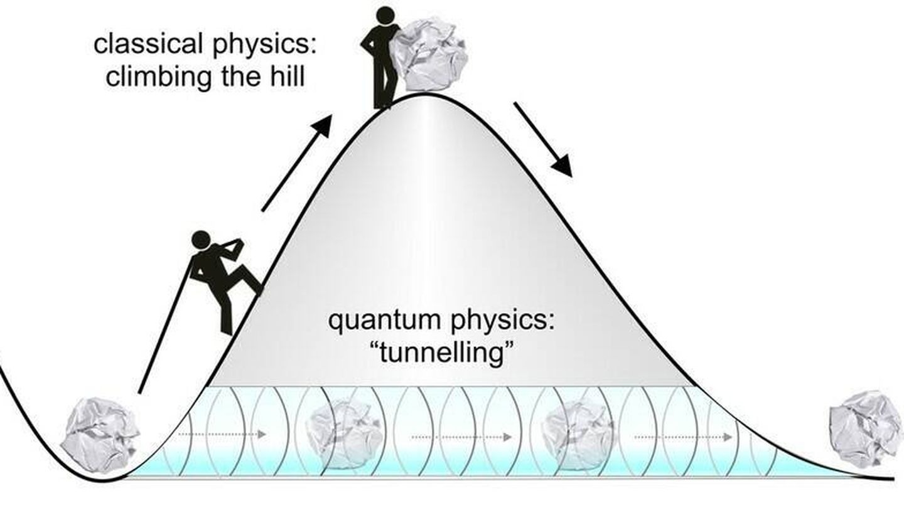

Fenomeno 1.
El tunelamiento cuantico es el proceso cuantico que se manifiesta gracias a la superposicon.ocurre cuando un objeto superpuesto se encuentra con una barrera que no puede atrabesar fisicamente,como,por ejemplo, un electron que se be repelido por un campo electromagnetico.Cuando el objeto se superpone,algunas de sus superposiciones pueden existir fuera de la barrera,y si al obserbar directamente se manifiesta una superposicion fuera de la barrera,el objeto habra atrabesado la barrera.
Nicolas Pulido Pamia 3ESOC.